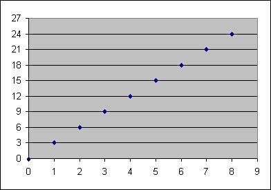

Si n désigne un entier , on appelle 'multiple de n' tout nombre de la forme m × n.
Les multiples de n forment donc un ensemble: M(n)={ k ∈ ℕ| ∃ m ∈ ℕ | k=mn}
Le cas où n=0 est particulier M(0)={0} Dans tous les autres cas M(n) est un ensemble infini dont le plus petit élément est 0 et le plus petit élément > 0 est n.
Voici par exemple ce qu'on obtient pour n=3: M(3)={0,3,6,9,12,....}

définition
Les 'diviseurs de n' sont les nombres dont n est un multiple.
Le cas de 0 est particulier, au sens précédent tout nombre est un diviseur de zéro, toutefois ce terme est réservé pour désigner certains éléments dans la théorie des , nous éviterons donc de l'employer.
Dans le cas où n est non nul les diviseurs de n forment un ensemble fini dont le plus petit élément est 1 et le plus grand élément est n.
Par exemple: D(12)={1,2,3,4,6,12} Vous pouvez générer quelques exemples avec le formulaire ci-dessous:
Definitions
definition
If n denotes an integer, we call 'multiple of n' any number of the form m × n.
The multiples of n therefore form a set: M (n) = {k ∈ ℕ | ∃ m ∈ ℕ | k = mn}
The case where n=0 is particular M(0)={0} In all other cases M(n) is an infinite set whose smallest element is 0 and the smallest element > 0 is n.
Here is for example what we get for n=3: M(3)={0,3,6,9,12,....}
definition
The 'divisors of n' are the numbers of which n is a multiple.
The case of 0 is special, in the previous sense any number is a divisor of zero, however this term is reserved to designate certain elements in the theory of , we will therefore avoid using it.
In the case where n is non-zero the divisors of n form a finite set smallest element of which is 1 and largest element is n.
For example: D(12)={1,2,3,4,6,12} You can generate some examples with the form below:
Remarquons que les diviseurs d'un nombre sont associés 2 par 2. Par exemple pour le cas de 12:
1 est associé avec 12
2 est associé avec 6
3 est associé avec 4.
Il se peut qu'un diviseur soit associé avec lui-même , c'est le cas quand on a affaire à un carré parfait (par exemple 16):
1 est associé avec 16
2 est associé avec 8
4 est associé avec 4
La recherche des diviseurs d'un nombre peut être faite de façon totalement naïve (tester tous les diviseurs possibles depuis 1 jusqu'au nombre en question). Cette recherche naïve peut être améliorée en exploitant la remarque ci-dessus et en arrêtant la recherche quand on atteint la racine carrée du nombre. En effet tout diviseur excédant la racine carrée est automatiquement associé à un diviseur précédant la racine carrée. On peut encore améliorer la recherche en utilisant des critères de divisibilité. Ces critères sont très liés au système de numération utilisé pour dénoter les entiers. Nous rappelons quelques uns de ces critères les plus courants en base 10:
théorème
Un nombre n'est divisible par 2 que si son chiffre des unités est pair.
Un nombre n'est divisible par 4 que si le nombre formé par ses deux derniers chiffres est lui-même divisible par 4.
Un nombre n'est divisible par 3 que si la somme de ses chiffres est elle-même divisible par 3
Un nombre n'est divisible par 5 que si son chiffre des unités est 0 ou 5.
Un nombre est divisible par 9 si et seulement si la somme de ses chiffres est divisible par 9.
Enfin la recherche systématique des diviseurs d'un grand nombre peut être facilitée en exploitant la de ce nombre en facteurs premiers.
Note that the divisors of a number are associated 2 by 2. For example for the case of 12:
1 is associated with 12
2 is associated with 6
3 is associated with 4.
It may happen that a divisor is associated with itself , this is the case when we are dealing with a perfect square (e.g. 16):
1 is associated with 16
2 is associated with 8
4 is associated with 4
The search for the divisors of a number can be done in a completely naive way (testing all possible divisors from 1 to the number in question). This naive search can be improved by exploiting the note above and stopping the search when you reach the square root of the number. Indeed any divisor exceeding the square root is automatically associated with a divisor preceding the square root. We can further improve the search by using divisibility criteria. These criteria are closely linked to the numeral system used to denote the whole. We recall some of these most common criteria in base 10:
theorem
A number is only divisible by 2 if its digit of units is even.
A number is only divisible by 4 if the number formed by its last two digits is itself divisible by 4.
A number is only divisible by 3 if the sum of its digits is itself divisible by 3
A number is only divisible by 5 if its digit of units is 0 or 5.
A number is divisible by 9 if and only if the sum of its digits is divisible by 9.
Finally the systematic search for the divisors of a large number can be facilitated by exploiting the of this number in prime factors.